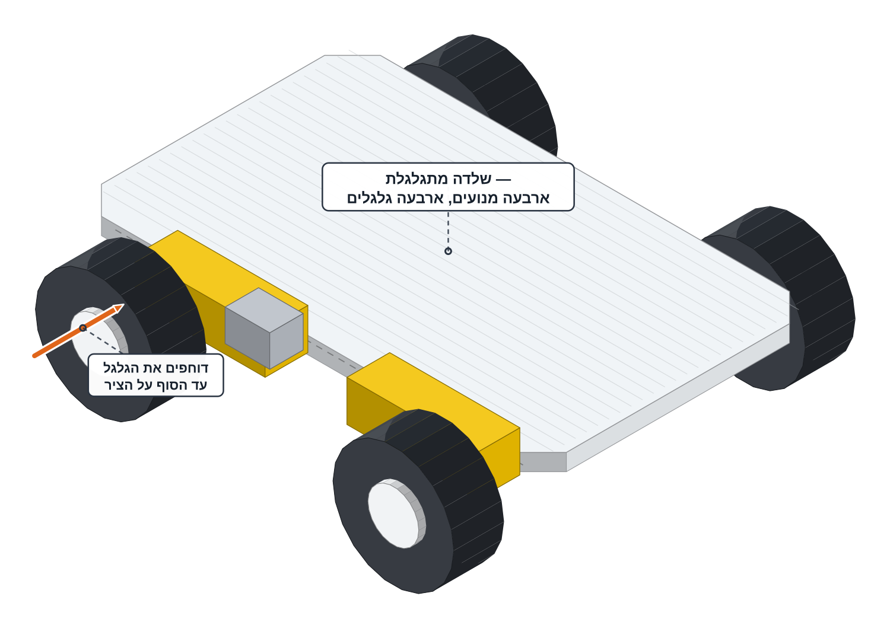
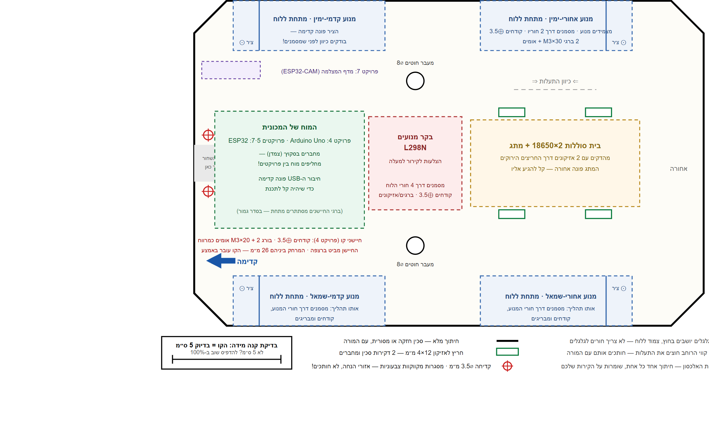
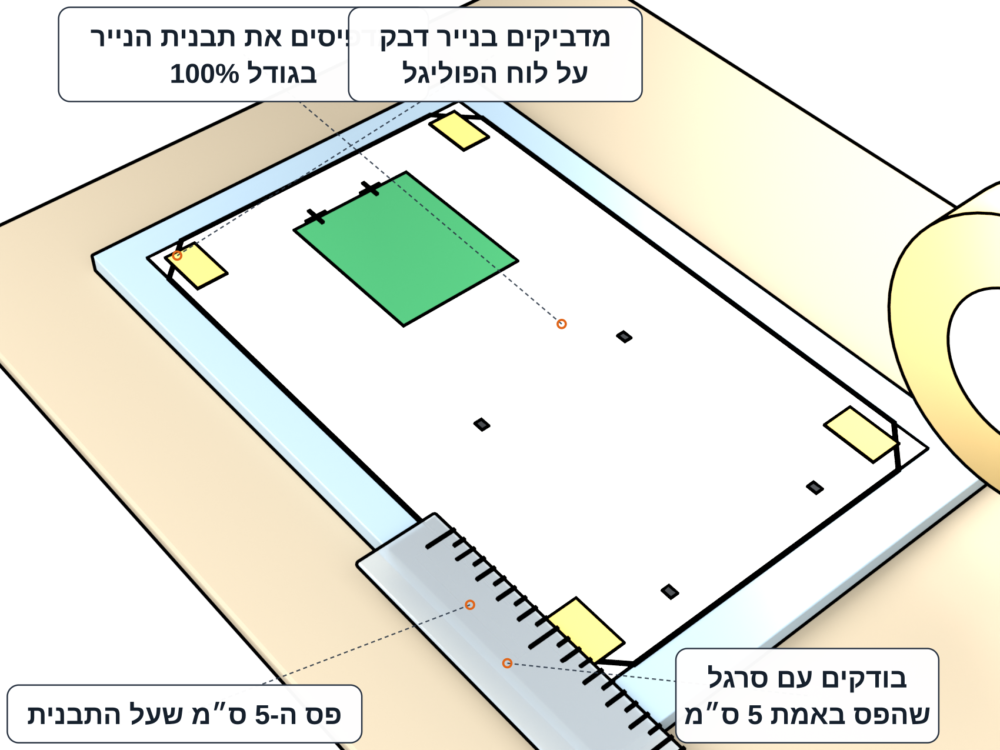
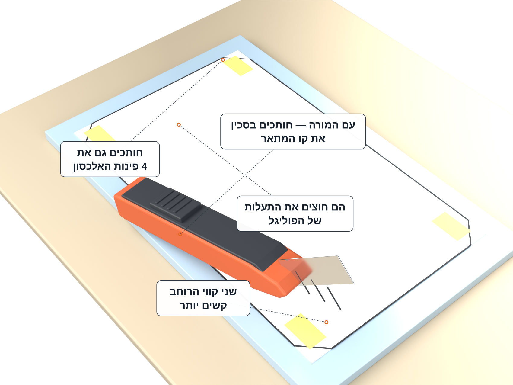
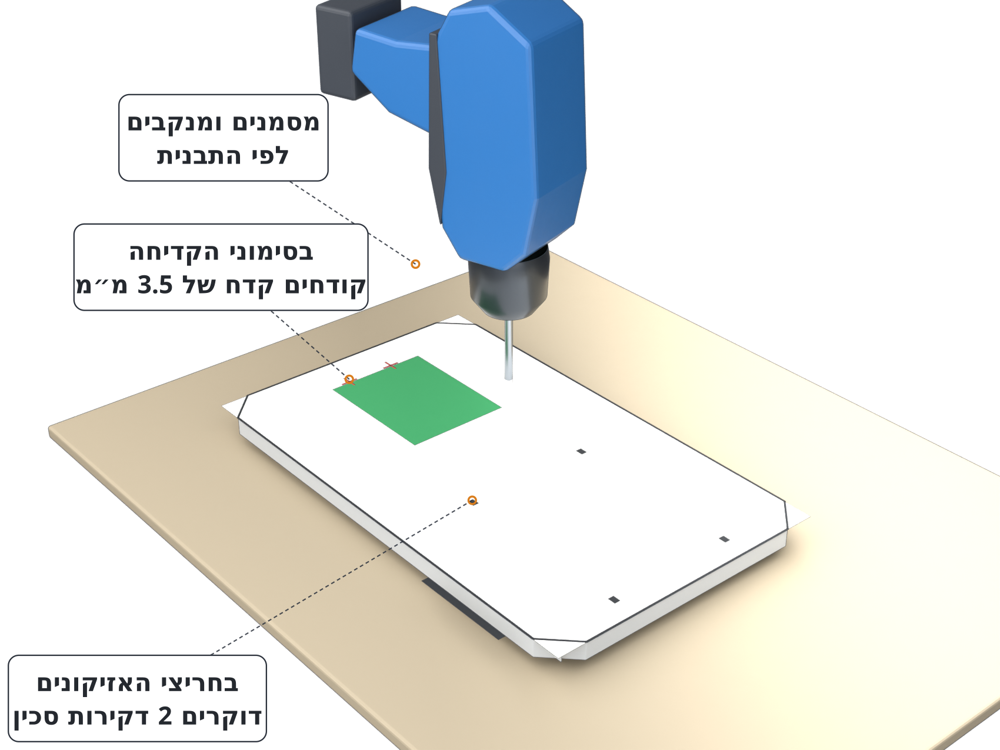
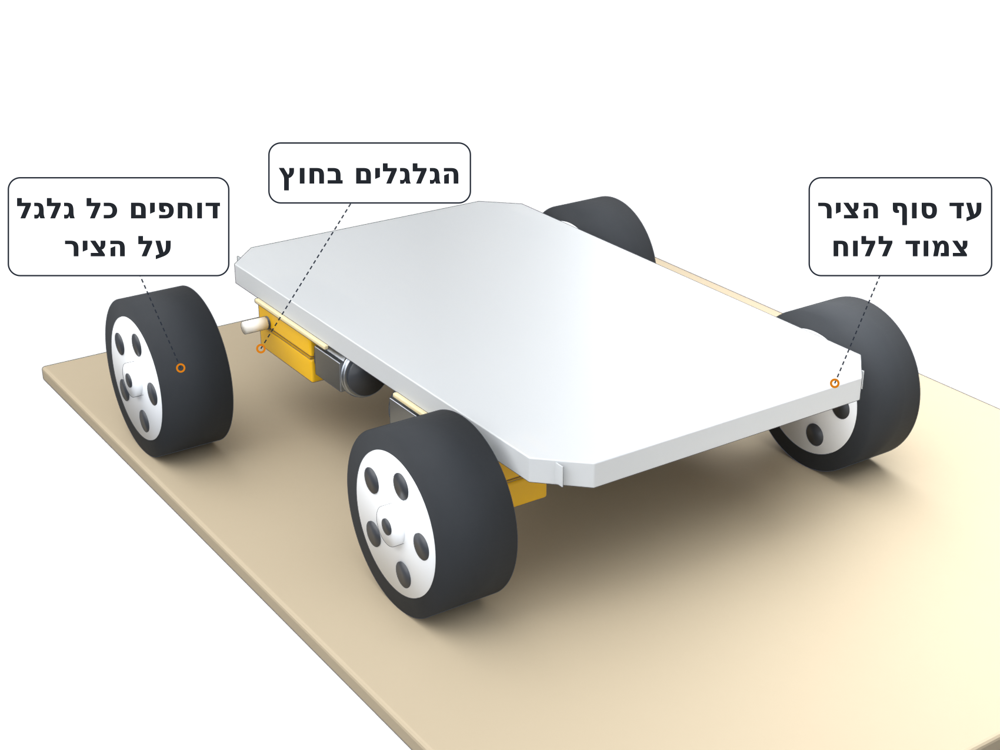

🚗בונים את השלדה מפוליגל
חותכים לוח פוליגל לפי תבנית נייר ומרכיבים עליו את המנועים, הגלגלים, בית הסוללות, הבקר והחיישנים.



מה עושים
חלק א׳ — חותכים את הלוח מפוליגל

מדפיסים את תבנית הנייר בגודל 100% ובודקים עם סרגל שפס ה-5 ס"מ שעל התבנית באמת באורך 5 ס"מ. מדביקים את התבנית על לוח הפוליגל בנייר דבק.

עם המורה: חותכים בסכין את קו המתאר. שני קווי הרוחב קשים יותר — הם חוצים את התעלות של הפוליגל. חותכים גם את 4 פינות האלכסון.

מסמנים ומנקבים לפי התבנית: בחריצי האזיקונים דוקרים 2 דקירות סכין ובסימוני הקדיחה קודחים קדח של 3.5 מ"מ.

חלק ב׳ — מרכיבים את החלקים על הלוח
מדביקים כל מנוע לתחתית הלוח בפינה שלו: פס דבק חם לאורך גוף המנוע, מצמידים ולוחצים 30 שניות. ככה ארבע פעמים — מנוע בכל פינה.

דוחפים את 4 הגלגלים על הצירים — הגלגלים בחוץ, צמוד ללוח.

מרכיבים שלושה חלקים על הלוח:

מבריגים את 2 חיישני הקו בחזית הלוח: לכל חיישן בורג M3x20 עם 2 אומים כמרווח. החיישן מביט ברצפה.

על השולחן עומד לוח על 4 גלגלים. הוא עומד יציב בלי להתנדנד, וארבעת הגלגלים נוגעים בשולחן. דחיפה ביד מרגישה כבדה — המנועים בולמים כל עוד אין חשמל, וזה תקין.
המכונית עוד לא נוסעת לבד — החיווט והקוד מגיעים בשלבים הבאים.